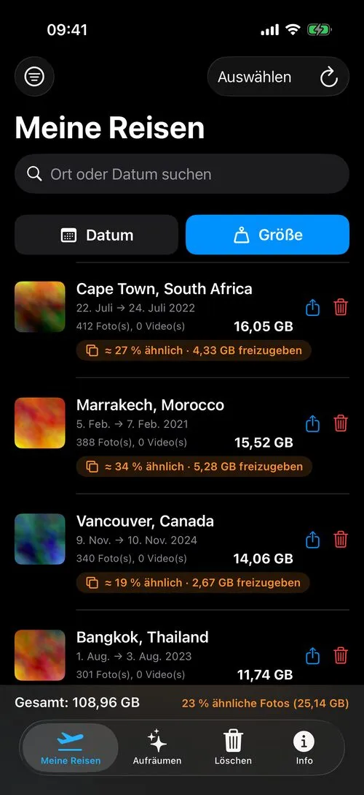
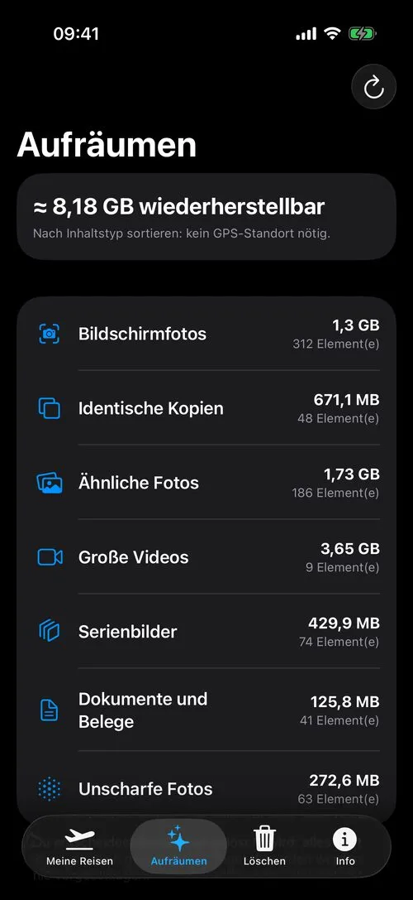
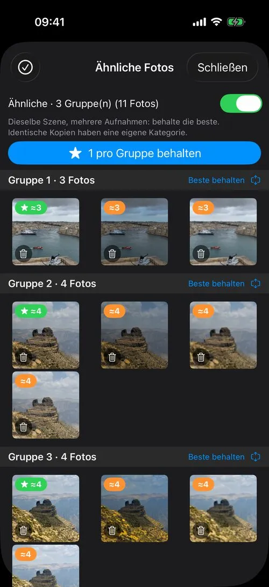
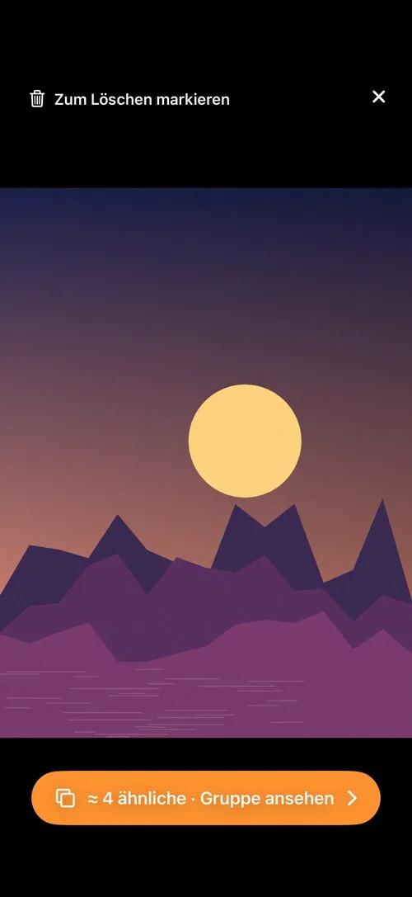
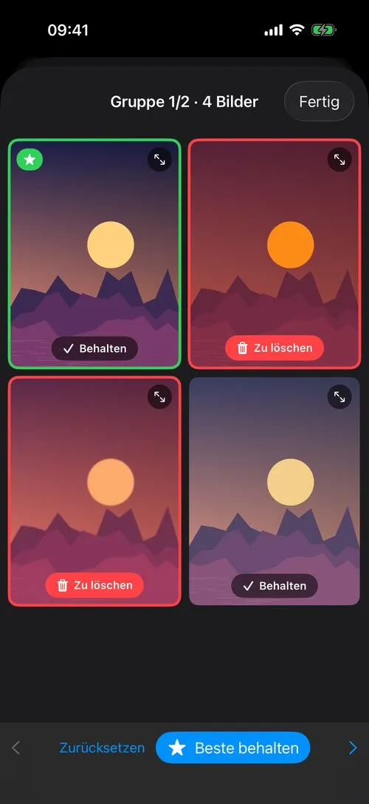
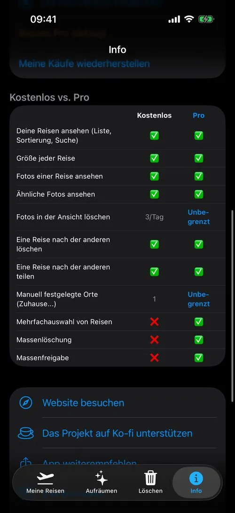

Endlich ein einfacher Weg, deine Fotomediathek aufzuräumen
TripSweep gruppiert deine Fotos und Videos nach Reise (oder nach Ereignis und Monat, wenn sie keinen Standort haben), zeigt, was Platz braucht, und findet, was du nicht brauchst: identische Kopien, ähnliche und unscharfe Fotos, Bildschirmfotos, große Videos. Behalte das beste Foto, lösche den Rest – ohne deine Fotos jemals irgendwohin zu senden.
→ Entdecke auch PhotoCull für Mac und Windows, die Desktop-App, die deine Fotos sortiert

Ein Blick auf die App





Was die App kann
Automatische Gruppierung nach Aufenthalt
Deine Fotos und Videos werden nach Reise gruppiert — nach Reise, wenn sie einen Standort haben, sonst nach Ereignis und Monat. Die Aufenthalte werden auf deinem iPhone gespeichert: Die Liste erscheint beim Start sofort und aktualisiert sich dann im Hintergrund.
Aufräumen nach Typ, ohne GPS
Der Tab „Aufräumen“ sortiert deine Fotos nach Inhalt: Bildschirmfotos, Dokumente und Belege, überzählige Serienbilder, Videos über 100 MB, unscharfe Fotos, identische Kopien und ähnliche Fotos, die irgendwo in der Mediathek liegen. Fotos ohne Standort werden nach Ereignis und Monat gruppiert, eine Schaltfläche „1 pro Gruppe behalten“ sortiert eine ganze Kategorie mit einem Tipp, und deine Favoriten werden nie vorgeschlagen.
Ähnliche Fotos, für dich gefunden
TripSweep analysiert deine Fotos im Hintergrund auf deinem iPhone mit Apples Vision-Framework. Jeder Aufenthalt zeigt, wie viel davon nahezu doppelt ist („≈ 27 % ähnlich · 4,3 GB freizugeben“) — ein guter Grund, zum Aussortieren zurückzukommen.
Vergleichen und das beste wählen
Öffne eine Gruppe ähnlicher Fotos: Hochformat nebeneinander, Querformat untereinander, nie beschnitten. Das beste Bild wird vorgeschlagen (Schärfe, Apples Ästhetik-Bewertung, Gesichter), Serienbilder werden automatisch gruppiert und deine Favoriten werden nie zum Löschen markiert.
Die Größe, die zählt
Sortiere Aufenthalte mit einer großen Schaltfläche nach Datum oder Größe. Eine Fußzeile zeigt das Gesamtgewicht deiner Fotos und den Anteil ähnlicher Fotos — damit du auf einen Blick siehst, wo sich Aussortieren lohnt.
Kostenlos ansehen, einfach aussortieren
Ein Tipp auf einen Aufenthalt öffnet die Ansicht — kostenlos. Markiere jedes Foto zum Löschen, ähnlich oder nicht, im Raster oder im Vollbild; eine große Schaltfläche springt direkt zur Gruppe, wenn ein Foto ähnliche hat.
Löschen ohne langes Überlegen
Immer über „Kürzlich gelöscht“, nie ein sofortiges endgültiges Löschen. Die kostenlose Version enthält 3 Löschvorgänge pro Tag aus der Ansicht; Pro hebt die Grenze auf.
Sichern oder an die schicken, die dabei waren
Exportiere einen ganzen Aufenthalt auf deinen Mac oder in Dateien, bevor du ihn löschst, oder teile ihn direkt (AirDrop, Dateien...) mit Freunden und Familie — nichts geht endgültig verloren.
Eigene Orte
Lege eigene Orte fest (Zuhause, Arbeit...) und schließe sie aus der Liste aus, um nur echte Reisen zu behalten.
100 % auf dem Gerät
Kein Foto und kein Standort verlässt jemals dein iPhone. Ortserkennung und Erkennung ähnlicher Fotos laufen vollständig auf dem Gerät, ohne Konto. Es können nur anonyme, abschaltbare Nutzungsstatistiken gesendet werden.
In 5 Sprachen verfügbar
Französisch, Englisch, Italienisch, Deutsch, Spanisch — die App passt sich automatisch an die Sprache deines iPhones an, im Hoch- wie im Querformat.
Kostenlos, mit zwei Einmal-Upgrades
Nie ein Abo. Durchsuchen, Vergleichen und Sortieren ist immer kostenlos. Die Pläne legen nur fest, wie viele Fotos du pro Tag löschen kannst.
Kostenlos
0 $
Alles durchsuchen, vergleichen und sortieren. 3 Löschvorgänge pro Tag auf dem iPhone und bis zu 6 Fotos pro Tag vom Mac aus.
Pro
4,99 $ · einmalig
Unbegrenztes Löschen auf dem iPhone, unbegrenzt eigene Orte und Sammelaktionen für mehrere Aufenthalte. Bis zu 15 Fotos pro Tag vom Mac aus.
Pro + Desktop
24,99 $ · einmalig
Alles von Pro, plus unbegrenztes Löschen über PhotoCull auf deinem Mac.
Preise in US-Dollar; der App Store zeigt sie in deiner Währung an. Du kaufst in der iOS-App TripSweep, PhotoCull folgt über dein iPhone. Einen Ordner auf dem Mac zu sortieren ist nie begrenzt.
Dein Datenschutz wird ernst genommen
TripSweep sammelt, sendet oder teilt niemals deine Fotos, Videos oder Standortdaten. Die gesamte Verarbeitung — einschließlich der Ortserkennung — erfolgt lokal auf deinem iPhone.
Vollständige Datenschutzerklärung lesenAnleitungen zum Aufräumen deiner iPhone-Fotos
iPhone Speicher freigeben, ohne für iCloud zu bezahlen
Wohin der Speicher deines iPhones wirklich geht und wie du am schnellsten Gigabyte an Fotos und Videos freigibst, ohne mehr iCloud-Speicher zu bezahlen.
So löschst du doppelte und ähnliche Fotos auf deinem iPhone
Finde exakte Duplikate, Serienaufnahmen und fast identische Aufnahmen auf deinem iPhone, behalte die beste und lösche den Rest sicher.
So räumst du alte Urlaubsfotos auf und behältst die besten
Aus tausend Urlaubsfotos ein Album zum Behalten machen: nach Reise gruppieren, fast identische Aufnahmen entfernen, die Highlights behalten.